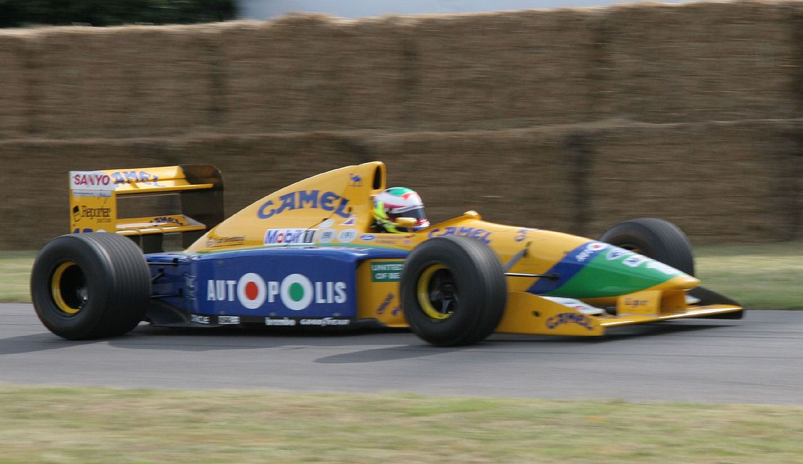
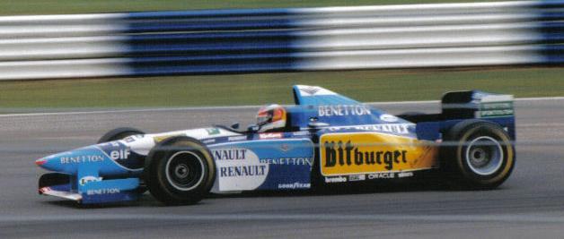
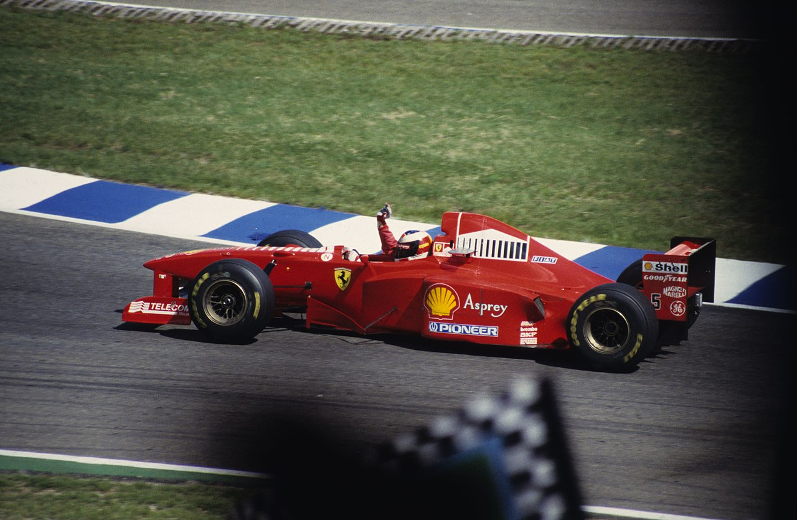
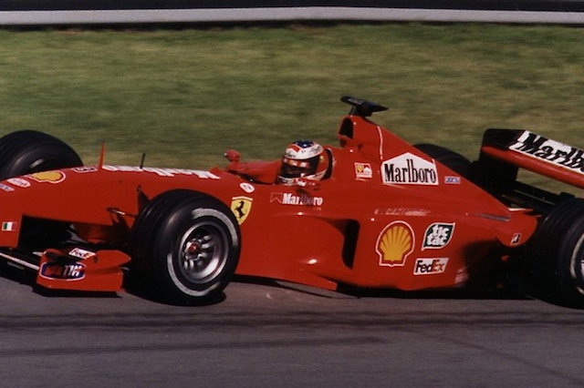
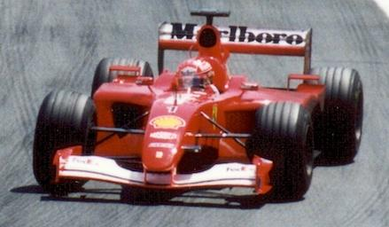
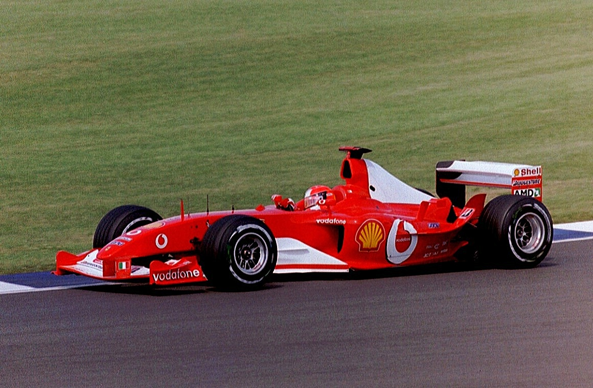
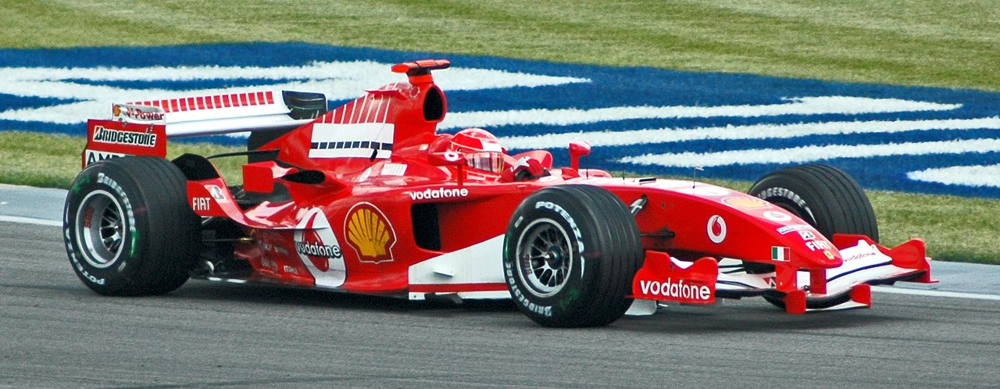
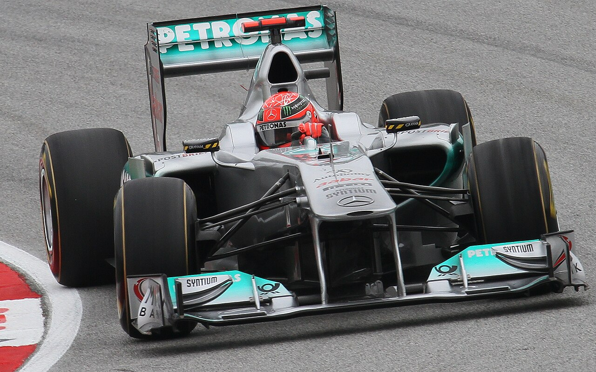

Élete
Michael Schumacher (Hürth-Hermülheim, 1969. január 3. –) egykori német autóversenyző, a Formula–1 hétszeres világbajnoka és a sportág egyik legeredményesebb pilótája. Ő volt a Formula–1 első német világbajnoka, mely nagy szerepet játszott a sportág németországi népszerűsítésében is. Egy 2006-ban, az FIA (Nemzetközi Automobil Szövetség) által végzett felmérésen a szurkolók a Formula–1 legnépszerűbb versenyzőjének választották.
A versenypályán kívül az UNESCO nagykövete és számos humanitárius kezdeményezés résztvevője, valamint a versenyzők biztonságának szószólója volt. Öccse, Ralf Schumacher szintén Formula–1-es pilóta volt. Fia, Mick Schumacher, is azóta apja és nagybátyja nyomdokaiba lépett.
2013 végén súlyos síbalesetet szenvedett, ami után kómába került. A baleset óta orvosi rehabilitáción vesz részt, visszavonultan él, a nyilvánosság előtt nem mutatkozik.
Pályafutása
Forma-1
1990-ben megnyerte a német Forma–3-as bajnokságot és a Makaói Világkupát is, ahol Mika Häkkinen volt legnagyobb riválisa. Néhány héttel később a Forma–3-as Fuji Kupát is megnyerte és a Makaó–Fuji duplázással – ami előtte még soha senkinek nem sikerült – 30 ezer dolláros pénzjutalmat kapott.
1991-ben a Mercedes junior programjának vezetője, Jochen Neerpasch és Schumacher menedzsere, Willi Weber együtt szervezték meg, hogy tesztelési lehetőséget kaphasson a Jordantől. A német versenyző Silverstone-ban ült először Formula–1-es autóba és a tesztelésen rögtön lenyűgözte gyorsaságával a Jordan vezetőit. A döntés megszületett: ő indulhat a belga nagydíjon, a börtönbe került Gachot helyetteseként.
Miután a Benetton csapattal megnyerte az 1994-es és az 1995-ös világbajnokságot, 1996-ban a Ferrarihoz szerződött, ahol 2000 és 2004 között sorozatban öt világbajnoki címet szerzett. Egyike a sportág hétszeres világbajnokainak, ő nyerte a legtöbb világbajnoki címet, övé a legtöbb versenyben futott leggyorsabb kör. A sportágban egyedülálló módon, a 2002-es évad minden versenyén dobogóra állhatott. A vezetési stílusa gyakran váltott ki vitákat. Kétszer volt részese a világbajnoki címet eldöntő ütközésnek, melyek közül az 1997-es, Jacques Villeneuve-vel történt ütközése után kizárták az az évi világbajnokságból.
Síbaleset
2013. december 29-én a délelőtti órákban a franciaországi Méribelben síelés közben súlyos balesetet szenvedett. A szemtanúk feltételezései szerint két sípályát összekötő részen egy kőnek ütközött, amely felrepítette a levegőbe és egy sziklára esett. A balesetnél 14 éves fia, Mick is ott volt. Súlyos sérülésekkel szállították a grenoble-i kórházba. Később elvesztette az eszméletét és kómába esett. Még aznap megoperálták, hogy csökkentsék a nyomást a koponyájában. Másnap, december 30-án ismét megműtötték, és eltávolították a bal agyféltekében keletkezett vérömlenyt. A második műtét után állapota javult, de még mindig életveszélyes volt. A műtétek után mesterséges kómában tartották a hétszeres világbajnokot. Állapotát sok spekuláció övezte, és ezt a hivatalos bejelentések hiánya csak súlyosbította. 97 nappal a balesete után, április 4-én menedzsere, Sabine Kehm nyilatkozatában közölte, hogy Schumacher az ébredés jeleit mutatja. Ezután egy hosszú sajtószünet következett. 170 nappal a balesete után, 2014. június 16-án, bejelentették, hogy Schumacher felébredt a kómából, és elhagyhatta a grenoble-i kórházat. Átszállították a svájci Lausanne-ba, ahol a helyi egyetemi kórházban folytatódik a rehabilitációja.
Formula–1-es rekordjai
| Michael Schumacher 15 éves Formula–1-es pályafutása során ezeket a rekordokat állította föl a Formula–1-ben: | |
| Rekord | Szám |
|---|---|
| Világbajnoki címek | 7 (1994, 1995, 2000, 2001, 2002, 2003, 2004) |
| Sorozatban következő világbajnoki címek | 5 (2000–2004) |
| Győzelem ugyanazon a nagydíjon | 8 (Francia) |
| Győzelem ugyanazon a pályán | 8(Magny-Cours) |
| Első és utolsó futamgyőzelem között eltelt leghosszabb idő | 14 év, 1 hónap és 2 nap |
| Sorozatban következő dobogós helyezések | 19 (USA 2001–Japán 2002) |
| Leggyorsabb kör | 77 |
| Futamgyőzelem egy szezonban | 13 (2004) |
| Leggyorsabb kör egy szezonban | 10 (2004) |
| Pontok egy szezonban | 148 (2004), 144 (2002) |
| Dobogós helyezések egy szezonban | 17 (100%) (2002) |
| Sorozatban következő évek legalább egy futamgyőzelemmel | 15 (1992–2006) |
| Legkorábban eldőlt világbajnoki cím | 2002 – 17-ből a 11. futamon (64,71%) |
Galéria








